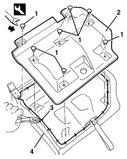
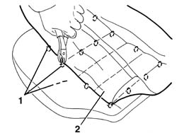

7050A65 Rear CUSHION COVER, (single), removed - Replacement
- Path
- Procedures > 70 FITTINGS > 7050 REAR SEATS > 7050A rear seat assembly > 7050A65 Rear CUSHION COVER, (single), removed - Replacement
- Kind
- repair procedure (removal / refitting; the operation number is the code)
- Applies to
- all engines; all production periods
- Interactive page
- https://sloeber94.github.io/elrnDB-a156/en/#/3238932
Applies to: all engines; all production periods; only with equipment: Station Wagon
1. Release the retaining buttons using the special tool.
 | Name | Country |
|---|---|---|
1 | Scraper blade | 1.823.015.000 |
2. Remove the bottom cover.
3. Cut the rings anchoring the cover to the frame, working along the entire perimeter.
4. Tilt the cushion.

Applies to: all engines; all production periods; only with equipment: Station Wagon
1. Cut the rings anchoring the cover to the padding.
2. Remove the cover.

Applies to: all engines; all production periods; only with equipment: Station Wagon
Check that the cushion cover is intact and shows no signs of damage.
Fit the cover in position and, using the specific tool, clamp the rings anchoring the cover to the padding.
| Name | Country |
|---|---|---|
- | Pliers for metal points | 1.878.017.001 |
Tilt the cushion.
Using the special tool, clamp the rings anchoring the cover to the frame.
Mould the cushion cover into shape.
Fit the bottom cover in position and secure it with the retaining buttons.